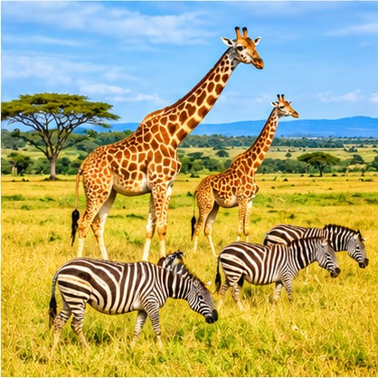
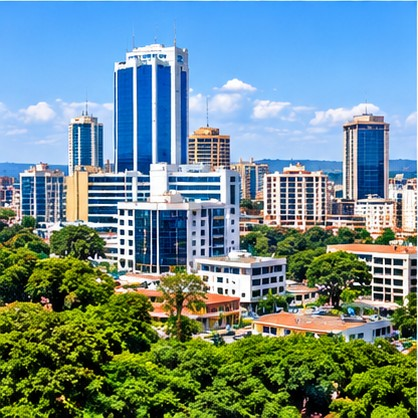
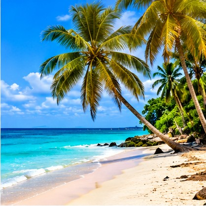

Bwindi Impenetrable Forest
Known for its rich forest environment and mountain gorilla experiences. Permits and guided visits require advance planning.
PLACES TO REMEMBER
Discover beautiful landscapes, wildlife and cultural highlights across East Africa.
Known for its rich forest environment and mountain gorilla experiences. Permits and guided visits require advance planning.

Enjoy spectacular river scenery, powerful waterfalls and opportunities to explore nature.

A varied landscape with wildlife, open savannah and beautiful views.

Explore city landmarks, local culture, markets and the energy of Uganda's capital.

Enjoy relaxing lakeside views and discover activities around Africa's largest lake.
A beautiful coastal escape in Kenya, ideal for a beach holiday and ocean views.